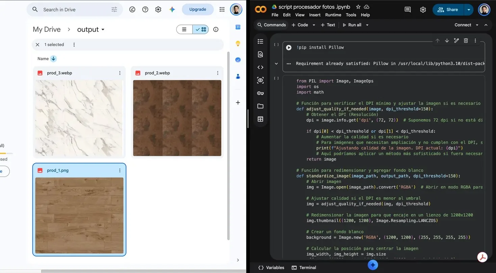
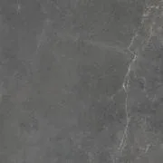
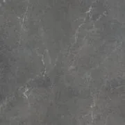
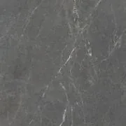
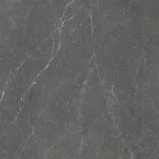
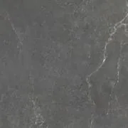
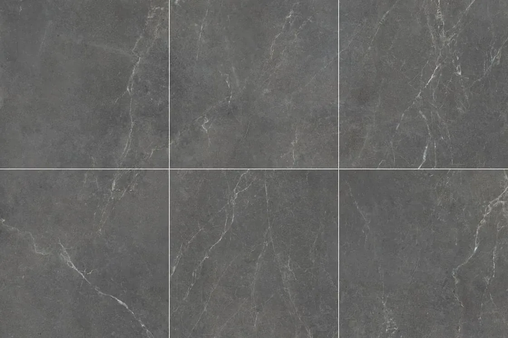
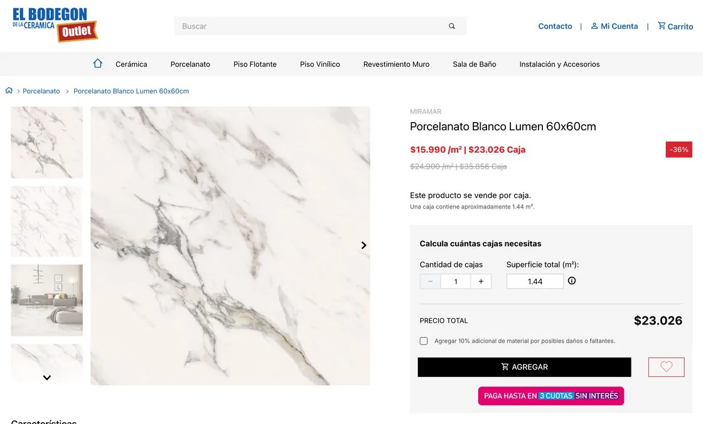
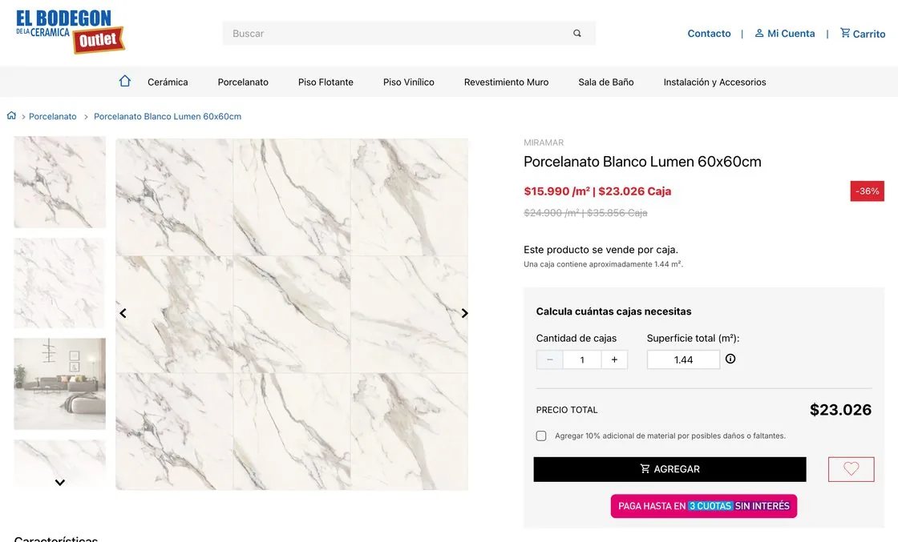
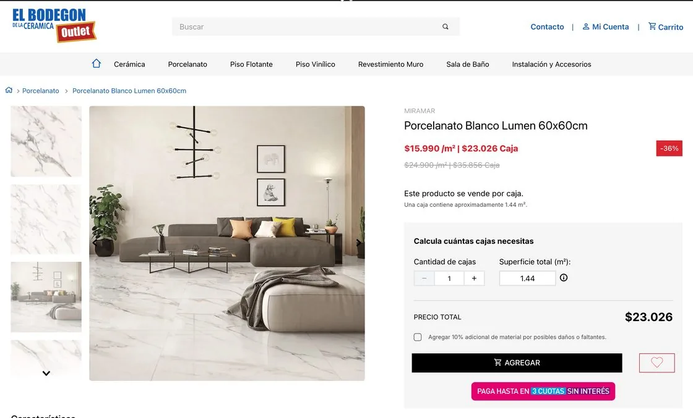

Image processor
While designing an e-commerce site from scratch for a traditional company going digital, I found a bottleneck in catalog preparation: about 1,000 product images had to meet the same specifications before going live. With AI, I built a tool that processes the whole batch in 4 minutes, adapts to any platform's specifications and generates an installed-surface image when only photos of loose pieces exist.

The bottleneck
Preparing each image meant repeating the same five actions. The task didn't need a different design decision per file, only the same rules applied consistently, so I treated it as a workflow problem.
- 01Open
- 02Resize
- 03Center
- 04Export
- 05Check
- 01Define specifications
- 02Run
- 03Verify
Why a custom script
The script had to handle several tasks at once, and no single tool covered them.
Surface images
None of the tools I tried could assemble an installed-surface image from several pieces.
Completeness check
None of them checked that every image had been processed.
Reusable setup
Entering parameters in a script was simpler than reconfiguring a tool every time.
The rules
The script is configured with each e-commerce platform's specifications. You look up the platform's image requirements and enter them as parameters.
| Parameter | In this project |
|---|---|
| Dimensions | 1500 × 1500 px |
| Aspect ratio | 1:1 |
| Background | White |
| Format | JPG |
| Max file size | 300 KB |
| Min quality | 50 (JPG scale) |
| Folders | Input and output in Google Drive |
DecisionEach image is scaled without distortion and centered on a white square canvas. Every product keeps a consistent scale, and no color differences show against the site background.
Built with AI
I developed the script with ChatGPT in about two hours of iteration. I defined the rules, tested the output on real samples and adjusted until the result matched. The script runs this sequence on each file, using the configured parameters.
- InputDrive folderAbout 1,000 photos
- 01ConvertTo the defined format
- 02ResizeWithout distortion
- 03CenterOn a white 1:1 canvas
- 04CompressRepeats until 300 KB
- 05VerifyCompares input and output
- OutputReady imagesPlus a report of missing files
Verification
Each file name included the SKU and the product name. When it finishes, the script compares the number of images and the file names between the input and output folders, and reports any missing product.
I also reviewed a sample of the processed images, chosen by piece type (square, rectangular and irregular), to check the visual result. The sample had no errors.
Result
I estimated the 15 hours of manual work from a sample of photos I processed by hand. The 4 minutes of run time are measured. Even including development time, the first run took a seventh of the manual process.
I ran the script several times and handed it off to the development team and the client. I don't have usage data after the handoff.
Times for a batch of about 1,000 images. Bars to scale.
The installed-surface image
In ceramics, customers need to see the product installed, but suppliers often sent only photos of loose pieces. I added a function that assembles an image of the full installed surface from those pieces.
The layout depends on the piece's proportions, as in a real installation:
The result is cropped to 1:1 so it uses the same format as the rest of the catalog. If the pieces don't fill the last row, the script repeats pieces from the same set to complete it.
The installed-surface image is a reference, and the client knew it.









What I learned
This project extended my design work into the production process. When a task requires the same decisions hundreds of times, I turn them into explicit rules and automate them. AI speeds up development, but defining the rules and validating the result remain design work.